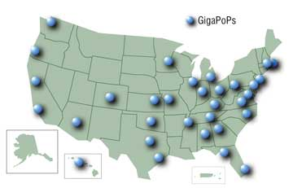

Александр Евангели
Желающих радикально менять действующую инфраструктуру, как правило, находится очень мало: слишком многое за этим стоит - огромные капиталовложения, сложившиеся деловые и социальные взаимосвязи, традиционный оборот товаров и услуг. Ведь даже соблазнительная идея проложить хайвэй к каждому гаражу не заставит здравомыслящего хозяина отказываться от имеющихся дорог. Поэтому новые быстрые глобальные сети неспешно зреют в недрах действующей коммуникационной инфраструктуры, старого доброго Интернета. Об этих сетях и пойдет речь.
По мнению аналитиков телекоммуникационного рынка, разработки в области крупномасштабных сетей в значительной степени подпитываются представлениями политиков и правительственных экспертов о механике глобального лидерства США. Стратегия этого лидерства опирается на высокопроизводительные коммуникации, лежащие в основе совершенной экономики и контроля над информационными потоками. Нынешняя администрация США (хотя и в меньшей степени, чем предыдущие хозяева Белого дома) уповает на информационные технологии как на один из наиболее действенных инструментов удержания своего глобального превосходства. Акцент делается на глобальные сверхбыстрые сети, позволяющие усилить государственное влияние в своей стране и за рубежом, ускорить и контролировать финансовые транзакции и решать проблемы фундаментальной науки, здравоохранения и образования. Развивая сети связи, американские специалисты оставляют ключевые элементы инфраструктуры (например, суперкомпьютерные центры и банки данных) на территории США, предоставляя международному научному сообществу право пользоваться их услугами.
Важна в этом деле и четкая координация всех работ, поэтому развитая организационная структура, создающая такие быстрые крупномасштабные сети, в большинстве случаев получает финансовую и административную поддержку на федеральном уровне.
Методологический и инструментальный уровень построения сетей, необходимый для роста Интернета и внутренних сетей федеральных министерств и ведомств, обеспечат новые технологии. Первоначальные инвестиции правительства США в исследования и разработки сетевых технологий помогли cформировать нынешний Интернет и проложили Америке путь к лидерству в информационной индустрии. Результаты исследований в области быстрых глобальных сетей, проводимых университетами, промышленностью и правительством, быстро выходят в частный сектор, где их использование меняет характер общественных связей.
Последним амбициозным проектом в области вычислений было японское "пятое поколение". Реакцией на этот вызов стало понимание того, что смена вычислительных поколений - рутина и неизбежность с циклом полтора года. Вероятно, первым столь же амбициозным проектом в области глобальных коммуникаций стал Internet2 (http://www.internet2.edu) - он открыл эпоху сверхбыстрых глобальных сетей. Индустрия отреагировала на него ростом пропускной способности более быстрым, чем рост вычислительной мощности.
"Интернет уже оказал огромное влияние на нашу жизнь и наше общество, - говорит Дуглас Ван Хоувелинг, президент и глава администрации объединения UCAID (University Corporation for Advanced Internet Development), возглавляющего инициативу I2. - Но политические рекомендации исходят в значительной мере из анекдотов, многие из которых не основаны на фактах".
Исчерпанность старых технологийРождение Internet2 как технологии нового поколения связано с тем, что сегодня исчерпаны возможности роста традиционного Интернета, идеологические основы которого были заложены в 1968 г., когда исследовательское подразделение министерства обороны США под названием ARPA построило первую компьютерную сеть из четырех компьютеров. В следующее десятилетие к сети ARPANET подключились университеты и были созданы все базовые протоколы современного Интернета, в том числе главный из них - протокол IP четвертой версии. В 1984 г. появилась система доменных имен, в 1989-м к Сети было подключено более ста тысяч компьютеров в десяти странах. В 1991-м к Интернету присоединилась Россия, и в том же году заработала "паутина" WWW. С этого момента Интернет стал расти экспоненциально: в 1992 г. в нем было более миллиона компьютеров, а за 1993-й Web выросла в три с половиной тысячи (!) раз. В 1994 г. через Интернет уже можно было заказать пиццу на дом или такси. Сеть стала глобальной, улучшились каналы связи, количество компьютеров выросло до десятков миллионов, а число пользователей - до сотен миллионов. Но принципиально глобальная Сеть не изменилась. Технически по состоянию на 2004 г. Интернет не сильно ушел вперед по сравнению с концом 1960-х годов. От ARPANET он унаследовал существенные проблемы: недостаточное адресное пространство, отсутствие механизма автоматической конфигурации адресов, низкую производительность (при большой нагрузке на маршрутизаторы), неприспособленность к передаче чувствительной к задержкам информации (голоса и видео), а также безопасность и ряд вторичных проблем, порожденных этими фундаментальными ограничениями. Все они связаны с протоколом IP, точнее, с его четвертой версией. И все эти ограничения преодолеваются в новой, шестой версии IP. Сеть, в которой внедрен протокол IPv6, и называется Internet2.
|
Направления исследований
Основой практически для всех исследований и разработок в области новых глобальных сетей становятся требования к технологиям и приложениям, расширяющим возможности Интернета, которые генерируются федеральными агентствами.
Программа исследований усовершенствованной сетевой инфраструктуры (ANIR) направляет усилия научного и инженерного сообществ США на фундаментальные научные исследования, требующие высокоскоростных вычислений. Она предусматривает поиск и создание наиболее перспективных технических и технологических решений для сетей нового поколения. Так, в рамках ANIR построена сеть vBNS, которая связала вычислительные центры Национального научного фонда и около 100 исследовательских институтов США, ведутся разработки протоколов сетевого доступа и управления, инструментальных средств управления сетью, методов организации беспроводных сетей, мобильных вычислений, оптических сетей, ПО поддержки распределенных вычислений, поиска и распределения сетевых ресурсов, а также устройств и подсистем ввода-вывода.
Разработка технологий организации сети, необходимых для ускорения передачи информации в распределенных средах, поручена Национальному научному фонду США. В частности, среди поставленных перед ним задач - создание методов комплексного мониторинга сети и обнаружения сетевых проблем, разработка средств и механизмов их разрешения, а также автоматизированных инструментальных сетевых средств и приложений для организации совместных исследований и обмена информацией.
Активные сети - принципиально новая технология, работы над которой ведет управление перспективных исследований МО США (DARPA). Это управление разрабатывает архитектуру сети, в основе которой лежит программируемая инфраструктура, а также методы организации и управления для активных сетей и высокоуровневые службы, ориентированные на пользователей.
Глобальные подвижные ИС, которые обеспечивают мобильным пользователям дистанционную работу и доступ к услугам информационной инфраструктуры МО США, тоже находятся "в русле быстрых сетей", и за эти исследования тоже отвечает DARPA.
Разработки расширяемой сети (поручены DARPA) призваны адаптировать сетевую инфраструктуру к масштабным изменениям трафика. Успех в этой области обеспечит доступ к географически распределенной и гетерогенной информационной инфраструктуре и ускоренный рост масштабов системы. В рамках данной программы DARPA в 1999 г. инициировало исследования, цель которых - обосновать создание гигабитной беспроводной сети связи, включающей космический сегмент на базе низкоорбитальных спутников.
Internet2 - поле мечты
До 1995 г. Сеть, поддерживаемая правительством США, находилась в полном распоряжении ученых - физиков, медиков, биологов - и использовалась для исследовательских нужд. Все решал домен, а не пропускная способность, но со временем у Интернета появились весьма далекие от науки применения и цели. Сеть постепенно становилась не только средством общения и источником информации, но и инструментом коммерции и рекламы товаров. Поэтому не удивительно, что примерно с середины 90-х разработкой технологических и дизайнерских стандартов Интернета занимаются в основном корпорации. Чтобы вернуть себе свободу профессионального общения и не испытывать нехватки в пропускной способности сети, университеты США образовали некоммерческий консорциум под названием Internet2, или просто I2. В октябре 1996 г. в Чикаго представители 34 университетов решили создать новую Сеть, ежегодные взносы в строительство которой установили в размере 500 тыс. долл. с каждого участника.
В феврале 1997 г. проектом заинтересовался президент США Билл Клинтон, задумав в дальнейшем "скрестить" Internet2 с правительственным проектом NGI (Next Generation Internet), поскольку они оказались весьма схожими. С этого времени началось правительственное финансирование I2. Тогда же проект I2 получил возможность использовать наработки NGI, однако в целом остался самостоятельным и закрытым.
Сегодня в числе участников I2 более 200 американских университетов, правительственные и коммерческие структуры, в частности, Microsoft, 3Com, IBM, Cisco и другие компании. И в этом есть несомненный плюс. Тесное сотрудничество с корпорациями ускоряет принятие новшеств в коммерческой Сети. Подобно тому, как электронная почта и WWW стали результатом инвестиций в университетские и государственные исследовательские сети, финансовая поддержка Internet2 позволит расширить возможности Интернета будущего.
Цель проекта Internet2 - разработка новых технологий передачи данных, более быстрых и качественных по сравнению с действующими. Ведь по сути это не другая Сеть, а усовершенствованное продолжение существующей.
Кроме идеи создания вольницы для научного общения, проект I2 преследовал цель увеличить эффективность использования Интернет-каналов: общеизвестно, что для ряда приложений перестало хватать мегабитных каналов и требуются уже гигабитные скорости передачи информации. В I2 скорость передачи данных достигнет 10 Гбит/с.
Согласно проекту, основу сети I2 составят несколько десятков узловых точек - GigaPoPs (gigabit-capacity points of presence - точки доступа гигабитной мощности), связанных общей магистралью, называемой Internet2 Backbone Networks (см. рисунок). Университеты, исследовательские сети и "старый" Интернет будут связаны непосредственно с узловыми точками по волоконно-оптическому кабелю.
|  | Карта узловых точек (GigaPoPs) сети Internet2.
|
Магистраль базируется на оптической сети Abilene (стоимостью 500 млн долл.), которая разработана организацией UCAID при участии Qwest Communications, Nortel Networks, Cisco Systems и Indiana University и обеспечивает скорость 2,4 Гбит/с, чего для нужд I2 пока вполне достаточно.
Переход на новые скоростные каналы потребовал иных протоколов маршрутизации, и с августа 2002 г. в I2 прочно обосновался протокол IPv6, хотя вопрос о том, насколько успешно старые интерфейсы поддерживают новые возможности, нужно ли их менять и как, не снят до сих пор.
Сейчас разработчики I2 сотрудничают с другими национальными сетевыми проектами, такими, как NGI (США), CANARIE (Канада), CUDI (Мексика), объединяя их трассы через пункты GigaPoPs.
Следует заметить, что строительство сети идет фактически в обратном запланированному порядке. Изначально участники I2 и UCAID полагали, что архитектура I2 будет развиваться вслед за прикладным ПО, т. е. сначала разработчики создадут ПО, для работы которого потребуются каналы с гарантированно высокими скоростью и качеством передачи на всем пути прохождения информации, а затем инженеры придумают, как построить такую сеть. И хотя программам, используемым в I2, пока не нужны предельные возможности скоростных линий, предположения инженеров относительно характеристик сети, которые понадобятся программистам, до сих пор оказывались справедливыми.
Концепцию I2 можно охарактеризовать как "поле мечты": это сеть, обещающая скорость в тысячу раз более высокую, чем сегодняшние Интернет-каналы. Рекорды скорости устанавливались с завидным постоянством с момента появления I2. Так, в рамках проекта I2 демонстрировалась передача 625 Мбайт данных на расстояние в 12 272 км (отделяющее город Фэрбенкс на Аляске от Амстердама) всего за 13 с. А в сети, объединяющей более 200 университетов и исследовательских центров США, была достигнута скорость передачи 401 Мбит/с. В состав этой сети входит точка доступа Pacific Northwest GigaPoP (http://www.gigaport.nl), магистральные каналы I2, оптическая инфраструктура Starlight и скоростная компьютерная сеть SURFnet (http://www.surfnet.nl/en), обеспечивающая обмен данными между высшими учебными заведениями Нидерландов. С обеих сторон использовались ПК под управлением ОС Debian Linux.
Еще одна публичная демонстрация возможностей I2 была устроена в Театре Линкольна в Майами. Перед концертом через I2 состоялся телемост, связавший два университета в разных концах США, в котором участвовали композиторы, чьи произведения должны были звучать в зале, а затем была организована трансляция исполняемых произведений по новой сети. Мощности I2 обеспечили DVD-качество передачи видео и звука, причем без задержек, характерных даже для скоростных соединений на больших расстояниях или передачи данных через спутник.
Кроме огромной пропускной способности, проект обещает такие совершенно новые приложения, как цифровые библиотеки, виртуальные лаборатории, услуги дистанционного образования и многое другое. Одно из интереснейших "почтовых" приложений - среда разработки окружающей виртуальной среды Tele-immersion, позволяющая участникам, находящимся далеко друг от друга, создавать визуальные миры, в которых они могут общаться.
Видеоконференц-связь тоже преобразилась. Конференции в I2 создают эффект присутствия, проецируя изображение на специальном оборудовании и используя одновременно несколько проекционных камер. Ведутся разработки 3D-конференций, которые должны вытеснить традиционные.
Интересны и интеллектуальные системы репрезентации, которые тесно связаны с компонентами сетей. Для имитации физической среды изучаются шлемы виртуальной реальности, CAVE-системы и системы широкоэкранного панорамирования, такие, как Reality Center компании SGI. Все эти новинки, используемые вместе с сенсорными сигналами, помогут пользователю переработать предложенную ему в виртуальном мире информацию и преобразовать ее в знания.
Безусловно, подобные интерфейсы предъявляют высокие требования к сети. Сегодня, например, реакция шлемов виртуальной реальности на физические действия, которые выполняют пользователи, бывает замедленной. Человек в шлеме, повернув голову влево, с удивлением обнаруживает, что компьютер не успел переориентировать изображение перед его глазами с той же скоростью, с какой сработали мышцы шеи. Это одна из главных причин так называемой имитационной болезни (simulation sickness), вред от которой для пользователей несомненен. Исследования, ведущиеся в рамках I2, призваны решить и эти проблемы.
Говоря об особенностях новой Сети и программ, которые она сможет поддерживать, с большой степенью вероятности можно полагать, что рынок благосклонно отнесется к новаторским решениям, а, следовательно, успех тех или иных новшеств будет определяться степенью освоения ими возможностей I2.
Интернет2 в РоссииОтечественный проект Интернет2 воплощает в жизнь универсальный оператор связи "Корбина Телеком" (http://www.corbina.ru), объединивший своих клиентов в высокоскоростную сеть передачи данных с более широкими возможностями по сравнению с традиционным Интернетом и IP-сетями предыдущего поколения. Российский Интернет2 опирается на протокол передачи данных IPv6 и высокоскоростную (10 Гбит/с) магистральную инфраструктуру. Каждый компьютер имеет гарантированный доступ со скоростью 100 Мбит/с к современным мультимедийным приложениям - телевизионному Интернет-вещанию и видеоконференциям с высококачественным изображением. Фрагмент сети "Корбина Телеком", с которого 15 декабря 2004 г. начался российский Интернет2, работает со скоростью 10 Гбит/с и объединяет два магистральных узла. Его протяженность составляет 28 км. Подключение к Интернет2 "Корбина" проводит на скоростях от 100 Мбит/с до 1 Гбит/с, оно доступно всем московским клиентам. Гейтом для связи с глобальной инфраструктурой Интернет2 российскому оператору служат узлы за пределами России телекоммуникационного концерна IDT, главного акционера группы "Корбина Телеком". Проекты внедрения в сетях Интернет-провайдеров разработок подобного рода реализуются во многих странах мира, но в России "Корбина Телеком" стала первой компанией, приступившей к практической реализации Интернет2. Еще до запуска проекта она объявляла об инвестировании 30 млн долл. в создание сетей широкополосного доступа в Интернет в 45 российских регионах; первым этапом этого проекта стало построение в 2005 г. сети в Московской области. Таким образом, компания обладает соответствующей сетевой инфраструктурой для реализации проекта Интернет2.
|
Интернет2 в КитаеПочти одновременно с запуском российского Интернет2 завершились работы по созданию и тестированию нового проекта в Китае - он получил название Cernet2 (сокращение от China Education and Research Network). Новая высокоскоростная Интернет-магистраль Cernet2 объединила 25 университетов в 20 городах страны. Результаты тестирования Cernet2 7 декабря 2004 г. оказались впечатляющими - была зафиксирована скорость передачи данных на отметке примерно 40 Гбит/с. Этот показатель выше, чем у магистрали Abilene и у нашей "Корбина Телеком". Средняя скорость обмена данными для каждого университета составляла порядка 2-10 Гбит/с. В ближайшем будущем к сети нового поколения Cernet2 будет подключено около 100 университетов. Эта сеть, как и Интернет2, основана на протоколе IPv6. Некоторые специалисты считают, что вскоре станет возможным применение технологий IPv6 в промышленности и для отдельных пользователей. Проект Cernet2 финансировался из средств фонда China Next-generation Internet Fund (CNGI), организованного национальной комиссией по реформам и развитию (National Development Reform Commission) для поддержки шести различных проектов высокоскоростных сетей, призванных заменить обычный Интернет. На разработку было затрачено 169 млн долл.
|
Поколение Next
В 1996 г. официальные лица США заявили о поддержке инициатив создания Интернета следующего поколения - Next Generation Internet (NGI), сети, базирующейся на новейших исследованиях и разработках федеральных ведомств. Эта инициатива в первую очередь была направлена на поддержку научных исследований и разработок крупномасштабной сети, которая обеспечила бы высокоскоростные соединения между основными исследовательскими центрами США. Техническую основу NGI составляет скоростная опорная магистраль vBNS. Но чтобы в полной мере использовать скоростные каналы, были необходимы другие, более совершенные технологии для сетевых сервисов: новые протоколы передачи, средства обеспечения безопасности, администрирования и управления сетью. Кроме того, создаются принципиально иные прикладные программы, способные в полной мере задействовать возможности высокоскоростных соединений.
Хотя и этот проект относится к зоне ответственности федеральных структур, в последнее время наметилась тенденция к сотрудничеству с разработчиками I2. По утверждениям участников I2, 150 из 200 исследовательских и образовательных учреждений, занятых в академическом проекте, приложили руку к разработкам для NGI и благодаря этому получили гранты на поддержку таких ключевых сетей, как Abilene и vBNS (на которой изначально базировался I2).
Проект NGI нацелен на решение трех основных задач: высокопроизводительная и качественная связь, развитие сетевых технологий, разработка и демонстрация новейших приложений. Предполагаемый уровень пропускной способности каналов - не ниже 100 Мбит/с и до 1 Гбит/с.
Задача создания высокопроизводительной системы связи подразумевает построение двух сетей разной пропускной способности. Первая - не менее чем на 100 узлов - обеспечит скорость межсоединений не ниже 100 Мбит/с, а другая будет иметь меньше узлов, но скорости выше 1 Гбит/с. Первую задачу предполагается решить за счет усиления действующей магистральной сети NSF, причем параллельно должна выполняться программа NSF по высокоскоростной связи и работы, запланированные в проекте Internet2.
Другие проекты
Правительство США уже несколько лет ведет работы над проектом сети под названием Govnet (сокращение от Governmental Net - правительственная сеть). Цель проекта - создать IP-сеть, отделенную от Интернета физически и программно, избежав таким образом "инфекционной" опасности.
Единая федеральная сеть США FedNets включает действующие сети федеральных агентств и скоростные экспериментальные сети, в том числе и магистральную сеть связи Национального научного фонда vBNS, исследовательскую и инженерную сеть Министерства обороны DREN, исследовательскую и образовательную сеть NASA под названием NREN, сеть интегрального обслуживания той же организации NISN и Esnet - сеть научного сообщества энергетиков.
Агентство национальной безопасности США строит инфраструктуру, способную поддержать устойчивые потоки данных в несколько гигабит в секунду. По результатам исследований АНБ пересмотрело первоначально намеченную структуру сети, снизило число уровней протоколов межсетевого взаимодействия, сместив управление к оконечным узлам сети, что увеличило ее эффективность. Техническую основу магистралей составили АТМ-каналы с волновым мультиплексированием, связанные восемью АТМ-коммутаторами и способные передавать до 720 цифровых потоков по 1,5 Гбит/с каждый на расстояние до 400 км.
Сегодня эта полностью оптическая сеть, базирующаяся на прототипах серийных маршрутизаторов Lucent с волновым разделением (они разработаны в рамках одного из проектов консорциума MONET, финансируемого DARPA) и на оптических коммутаторах компании Optical Networks, уже введена в эксплуатацию. Реализованные технологические решения обеспечивают прямую связь между пользователями без электрооптического преобразования, что существенно повышает защищенность системы от несанкционированного доступа и перехвата излучаемых сигналов.
Другой пример скоростной сети - усовершенствованная ATM-сеть Национального агентства обработки и распределения информации дистанционного зондирования Земли - NOAA. Она состоит из 2400 узлов, объединенных в 80-90 виртуальных локальных сетей, и должна поддерживать в реальном масштабе времени обработку данных о поверхности Земли, получаемых со спутников дистанционного зондирования.
Еще одна высокоскоростная структура - международная сеть iGrid. Национальный научный фонд установил точку доступа (STAR TAP) в точке сетевого входа (NAP) компании Ameritech в Чикаго для связи vBNS с международными сетями. STAR TAP управляет Электронная лаборатория визуализации (EVL) Университета штата Иллинойс в Чикаго.
Национальная лаборатория Argonne & NAP Ameritech - точка обмена с Интернетом следующего поколения (NGIX), соединяющая сети FedNets и Abilene; она обеспечивает обмен информацией в рамках международного сотрудничества федеральных агентств, университетов и промышленных компаний.
К концу 1999 г. посредством STAR TAP были объединены более 15 сетей разных стран, среди которых сети Азиатско-Тихоокеанского консорциума (APAN), Канады (CA Net), Европейского центра ядерных исследований (CERN), Франции (Renater), Израиля, Нидерландов (SURFnet), скандинавских стран (NORDUnet), Сингапура (SingaREN), Tайваня (TANet), Американо-азиатского тихоокеанского консорциума (TransPAC) и американо-российского консорциума (MirNET). Одна из главных особенностей STAR TAP -объединенный подход к управлению сетью, измерению ее характеристик, планированию и использованию географически распределенных ресурсов.
В странах Европейского союза тоже создают скоростную "Глобальную европейскую сеть" (GEN), которая предназначена для передачи любых видов данных, речи, видео.
Что же касается поставщиков услуг высокоскоростных сетей, то Национальный научный фонд определил категорию коммерческих провайдеров услуг доступа в высокоскоростные сети (HPNSP), в обязанности которых входит предоставление усовершенствованных сервисов по широкополосным сетям для университетов и федеральных агентств. Первым таким провайдером стала Abilene.
Несмотря на столь значительные достижения, апологеты быстрых сетей продолжают думать о новых методах распределенного доступа к данным. Ряд федеральных агентств прогнозируют в течение ближайших лет существенный рост требований к передаче данных от искусственных спутников Земли через сети связи, что заставляет разработчиков группы JET совершенствовать методы высокоскоростного доступа к массивам данных. В частности, NOAA прогнозирует, что информационные потоки Центра Силвер Спринг в штате Мэриленд вырастут от 150 Гбайт в день до 1 Тбайт в день. Для подготовки к столь масштабным изменениям NOAA в сотрудничестве с другими агентствами, работающими по программе крупномасштабных сетей, ведет модификацию методов управления высокоскоростными сетями передачи данных. В числе наиболее перспективных в этой области называется технология асинхронной передачи данных.
Протокол IPv6Разработка протокола IPv6 началась в 1992 г., а с 2003 г. его поддержка реализуется в большинстве магистральных устройств ведущих производителей телекоммуникационного оборудования. Этот протокол предлагает автоматически настраиваемые 128-разрядные адреса, которые позволяют разместить в Сети столько устройств, сколько потребуется. Версия IPv6 решает проблемы безопасности, имеет встроенные средства идентификации и криптографии, поддерживает широковещательную рассылку (для трансляции телевидения и радио), гарантирует "качество сервиса", т. е. постоянное соблюдение параметров пропускной способности сети и времени передачи пакетов. Кроме того, новая версия предлагает многочисленные улучшения в формате пакета, благодаря чему передача IP-пакета происходит быстрее и с меньшими затратами вычислительных ресурсов маршрутизаторов. Сеть Internet2 в полной мере задействует возможности нового протокола IPv6. Собственно говоря, сеть, в которой внедрен протокол IPv6, и называется Internet2. Принято считать, что ее главное отличие от старого Интернета состоит только в ширине каналов, но нагляднее всего разница между двумя сетями проявляется на одинаковых каналах при широковещательной передаче данных нескольким абонентам одновременно. Поскольку Internet2 поддерживает такую передачу, то когда, например, три человека смотрят одну телепрограмму, к ним передается один поток данных, а не три, как в сегодняшнем Интернете. Это существенно экономит пропускную способность сети и дает зеленый свет технологиям видео- и аудиотрансляций через Интернет. Благодаря поддержке вещания (multicast) и средств обеспечения приоритетного качества для передачи видео- и голосовой информации (QoS) разница при трансляции видна действительно невооруженным глазом. |
Администрирование проектов
К построению и развитию глобальных коммуникационных инфраструктур причастны десятки государственных и неправительственных структур, однако среди них есть несколько ключевых координаторов.
National Science Foundation (NSF, http://www.nsf.gov) - Национальный научный фонд США. Эта государственная организация сыграла исключительно важную роль в создании магистральной инфраструктуры Интернета в конце 80-х -- начале 90-х гг. Сегодня NSF финансирует и координирует работы по созданию новой высокоскоростной опорной сети, базирующейся на современных технологиях передачи данных.
National Coordination Office for Information Technology Research and Development (NCO/ITR&D, http://www.nitrd.gov) - Национальный координационный комитет по компьютерным технологиям, информатике и коммуникациям. Круг вопросов, которыми занимается этот государственный орган США, ясен из его длинного названия. Инициативы, касающиеся NGI, также входят в сферу официального регулирования этого комитета.
Joint Engineering Team (JET) - Объединенная инженерная группа. Координирует выработку общей сетевой архитектуры и организацию взаимодействия между сетями федеральных агентств FedNets и сторонними высокопроизводительными экспериментальными сетями. JET обеспечивает организацию взаимосвязей между поставщиками оборудования, научным сообществом и промышленностью в части сетевого взаимодействия и предоставления услуг с тем, чтобы улучшить доступные пользователям характеристики, а также избежать дублирования ресурсов и усилий. JET сотрудничает с академическим сообществом по программе разработки гигабитных коммутаторов (GigaPoPs), сетью Abilene, а также с участниками программы I2, принимая участие в тестировании и отладке NGI.
Кроме того, специалисты JET обеспечивают взаимодействие между федеральными агентствами и сетью Abilene с целью предоставления пользователям Аляски и Гавайских островов более дешевых телекоммуникационных услуг.
Networking Research Team (NRT) - Группа исследования архитектуры сетей. NRT координирует исследовательские программы по организации сетей в федеральных агентствах, распределению информации о результатах исследований среди участников работ, а также поддерживает работы по NGI.
High Performance Networking Applications Team (HPNAT) - Группа применения высокопроизводительных сетей. Координирует исследования и разработки в области организации сетей и повышения их производительности, а также создания новых сервисов. Кроме того, группа HPNAT курирует взаимодействие между федеральными агентствами, правительственными лабораториями, научным сообществом и промышленностью в области разработки приложений для крупномасштабных сетей, организует презентации технологий, конференции и семинары.
Группа обеспечения безопасности Интернета (Internet Security Team, IST) выступает центром по выработке требований к системе защиты, а также занимается испытанием средств безопасности и экспериментами с усовершенствованными технологиями защиты. IST предоставляет руководству LSNWG информацию, необходимую для организации исследований средств защиты NGI. Она же распределяет финансовые ресурсы, выделенные на разработки и исследования систем защиты Интернета, тесно взаимодействуя с агентствами и JET, помогает проводить экспериментальные проверки систем безопасности, а также публикует их результаты, делая их доступными для национальных и международных исследователей в этой области.
Приложения и задачи
Главная цель исследований в области создания крупномасштабных сетей состоит в том, чтобы дать пользователю услуги, способные удовлетворить все возрастающие потребности в вычислительных мощностях. Отметим перспективные задачи, для решения которых более всего необходимы технологии нового поколения быстрых сетей.
Высокопроизводительные приложения для нужд науки и техники (HPASE). Национальный научный фонд поддерживает обширную программу исследований по созданию приложений для фундаментальных отраслей науки, призванных приблизить решение наиболее важных мировых проблем. Столь амбициозные задачи выводят приложения этой группы на высшую ступень иерархии потребностей вычислительных ресурсов.
В 1999-2000 гг. совместными усилиями университетского сообщества, Центра атмосферных исследований (NCAR) и других федеральных лабораторий США в рамках программы HPASE были продолжены разработки системы моделирования изменений климата и атмосферы Земли. К концу 1999 г. исследователям стали доступны результаты моделирования за период 1860-2300 гг., отражающие изменения климата Земли под влиянием различных факторов, в том числе и деятельности человека.
В число задач NOAA входят также исследования в области сбора, обработки и анализа метеорологических данных. Для их проведения NOAA активно использует доступ к высокопроизводительным вычислительным системам, а также современные информационные технологии, включая NGI, iGrid и сетевые цифровые библиотеки.
Телемедицина. Разработки в области создания крупномасштабных сетей в Национальной медицинской библиотеке (NLM) формируют сети, обеспечивающие взаимодействие больниц, патронажных центров, медицинских школ, медицинских библиотек и университетов, чтобы дать возможность специалистам и исследователям обмениваться информацией и иметь доступ к необходимой медицинской литературе. NLM также постоянно проводит оценки эффективности тех или иных методов телемедицины и поддерживает разработку оптимальных технологий, позволяющих медицинским работникам из отдаленных мест установить прямой двусторонний контакт с их коллегами в крупных медицинских центрах. Эти технологии включают средства визуализации анатомии человека, анализаторы рентгеновских и томографических снимков и другие удаленные диагностические инструменты, а также технологии баз данных для хранения, доступа и передачи медицинской информации с соблюдением необходимых мер по защите целостности и конфиденциальности этих данных.
Компьютеризованные истории болезни. Цель этой программы - повысить оперативность, точность и улучшить тиражирование данных о состоянии здоровья пациента, чтобы способствовать повышению точности клинических решений.
Создание объединенных академических систем управления информацией, IAIMS. Эта программа Iпризвана развивать и внедрять системы управления потоками информации в пределах университетских и больших медицинских центров, чтобы увеличить эффективность научных исследований, а также упростить специалистам доступ к данным, необходимым для оценки состояния здоровья пациента. К программе подключены более 120 академических медицинских центров, включая учебные заведения, больницы, клиники и лаборатории. Эти центры нуждаются в оперативной информации о состоянии здоровья пациентов, результатах исследований, содержащихся в базе библиографических и фактических данных о пациенте, данных его лабораторных и клинических исследований, и все это - в режиме реального времени.
Проект "Видимый человек". Так как полный набор медицинских изображений человека требует емкости более 100 компакт-дисков, NLM занимается также исследованиями методов сжатия, чтобы снизить объем хранимой информации и повысить скорость обмена изображениями.
Биоинформатика. Это ключевой компонент исследований генома человека, генной инженерии и проектирования новейших лекарственных препаратов. Исследования в области биоинформатики широко используют аналитические методы и научное прогнозирование для определения ключевых молекулярных групп, связанных со здоровьем и болезнями человека.
Национальный центр биотехнологической информации (NCBI) сосредоточил свои усилия на автоматизированных системах записи и анализа обширной информации из области молекулярной биологии, биохимии и данных генетики, объемы которой постоянно возрастают. В распределенной базе данных NCBI накапливает данные от исследователей со всего мира и включает их в GenBank - банк данных ДНК-последовательностей, ключевой ресурс проекта "Геном человека". К этим базам данных ежедневно обращаются по Интернету более 90 тыс. сайтов. Безусловно, для таких масштабных работ сети высокой пропускной способности просто необходимы.
***
Интернет родился в США, и именно там находятся основные магистрали и жизненно важные узлы этого сложного, постоянно изменяющегося и развивающегося сетевого организма. Ряд крупных американских сетей по сути стали международными, поскольку обеспечивают глобальную связность для национальных сетевых структур, выступая для них в качестве вышестоящих Интернет-провайдеров. Большинство опорных узлов, в которых происходит обмен трафиком крупнейших Интернет-провайдеров, также находится в США.
Глобальные сети нового поколения имеют то же происхождение. Но это не помешает им стать опорой коммуникационной инфраструктуры нового тысячелетия, подобно тому, как это случилось в свое время с DARPAnet для современного Интернета.